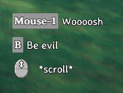

Custom Inputs
Custom inputs can be registered through the InputManager singleton.
Example
First, within Awake in your mod class, call a method to create and add all your custom key bindings to the InputManager. You can have key bindings defined "on the fly" which binds a specific key to an artificial button name. To be more versatile you can have the custom binding be defined in a configuration file and let the user change it to his preference. In our JotunnModExample we have both options implemented like this:
// Add custom key bindings
private void AddInputs()
{
// Add key bindings on the fly
InputManager.Instance.AddButton(PluginGUID, "JotunnModExample_Menu", KeyCode.Insert);
// Add key bindings backed by a config value
// Create a ButtonConfig to also add it as a custom key hint in AddClonedItems
evilSwordSpecial = new ButtonConfig
{
Name = "EvilSwordSpecialAttack",
Key = (KeyCode)Config["Client config", "EvilSwordSpecialAttack"].BoxedValue,
HintToken = "$evilsword_beevil"
};
InputManager.Instance.AddButton(PluginGUID, evilSwordSpecial);
}
Now, to use our input, we can use the ZInput class provided by Valheim.
Note that AddButton takes your PluginGUID as the first parameter. For now this is how Jötunn tries to avoid conflicts between multiple plugins which might bind the same key. This is still a workaround and will be adressed in future Jötunn releases.
// Called every frame
private void Update()
{
// Since our Update function in our BepInEx mod class will load BEFORE Valheim loads,
// we need to check that ZInput is ready to use first.
if (ZInput.instance != null)
{
// Check if our button is pressed. This will only return true ONCE, right after our button is pressed.
// If we hold the button down, it won't spam toggle our menu.
if (ZInput.GetButtonDown("JotunnModExample_Menu"))
{
showGUI = !showGUI;
}
// Use the name of the ButtonConfig to identify the button pressed
if (ZInput.GetButtonDown(evilSwordSpecial.Name) && MessageHud.instance.m_msgQeue.Count == 0)
{
MessageHud.instance.ShowMessage(MessageHud.MessageType.Center, "$evilsword_beevilmessage");
}
}
}
Custom KeyHints
Key hints are displayed in Valheim when you equip weapons or tools to show which keys execute a certain action. With Jötunn you can add your own key hints for your custom weapons and tools by the means of the same ButtonConfig class you can use to define custom key bindings. You need to create a KeyHintConfig with one or more instances of ButtonConfig in it. In our JotunnModExample we use the custom key bindings from the EvilSword to display a key hint for it and also override vanilla Valheim key hint messages.
// Implementation of key hints replacing vanilla keys and using custom keys
private void KeyHintsEvilSword()
{
// Create custom KeyHints for the item
KeyHintConfig KHC = new KeyHintConfig
{
Item = "EvilSword",
ButtonConfigs = new[]
{
// Override vanilla "Attack" key text
new ButtonConfig { Name = "Attack", HintToken = "$evilsword_shwing" },
// New custom input
evilSwordSpecial,
// Override vanilla "Mouse Wheel" text
new ButtonConfig { Name = "Scroll", Axis = "Up", HintToken = "$evilsword_scroll" }
}
};
GUIManager.Instance.AddKeyHint(KHC);
}
The resulting KeyHints look like this

Note that all texts are tokenized and translated ingame. The translations are also provided by Jötunn. Read the tutorial on Localizations for more information on that topic.